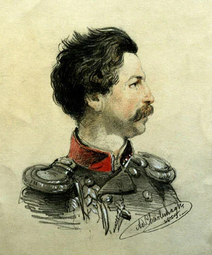

 <div style="text-align:left"><span style="font-size: medium;">Лет пятнадцать назад в журнале &#34;Волга&#34; были впервые опубликованы &#34;Записки моряка-художника&#34;, хранившиеся до того в петербургской &#34;Публичке&#34; в рукописи. Их автор - один из наших знаменитых маринистов Алексей Петрович Боголюбов.<br/><div style="text-align:center"></div><br/><p align="center"><span style="font-size: small;">А. Шарлемань. Портрет А.П. Боголюбова-офицера. 1853<br/>Саратовский государственный художественный музей им. А. Н. Радищева</span></p><br/>Читать записки Боголюбова не всегда просто: даже после обработки редактором слог его достаточно замысловат, инверсная манера построения фразы заставляет спотыкаться при беглом чтении. Но не это главное в записках. Поэтому для воскресного чтения хочу выложить в своем журнале несколько интересных на мой взгляд отрывков, относящихся к известным и не совсем известным событиям нашей морской истории. Сегодня речь пойдет о Наварине.<br/><br/><div style="text-align:center"><span style="font-size: x-large;">Дружественный огонь</span></div><br/>&#34;Был у нас кадет Шигарин. Отец его, тот самый, который так славно ответил в Наваринском сражении, командуя батареей и высунувшись с борта по случаю того, что с французского фрегата послали офицера на катере сказать, что ядра фрегата &#34;Елена&#34; ложатся в борт союзника, закричал: &#34;А зачем вы бьёте плохо турок!&#34;. В это время Иван Епанчин с бота орал: &#34;Всё равно, валяй его за двенадцатый год&#34;. Сей-то Шигарин, привезя сынка в учение (в Морской корпус - g_g), лохматого и нечёсаного в нанковом сюртучке, когда увидел, что служитель из матросов посадил его на табуретку, чтобы стричь, пристально всё время следил за этой операцией и, когда сын его вдруг преобразился из лохматого в гладко остриженный киверный помпон, то сам сел на табуретку, сказав служивому: &#34;Ну-ка, валяй и меня тоже поглаже&#34;. Факт ничтожный, но он так врезался мне в юную память, что и до сих пор вижу перед собой отца и сына.&#34;</span></div> 